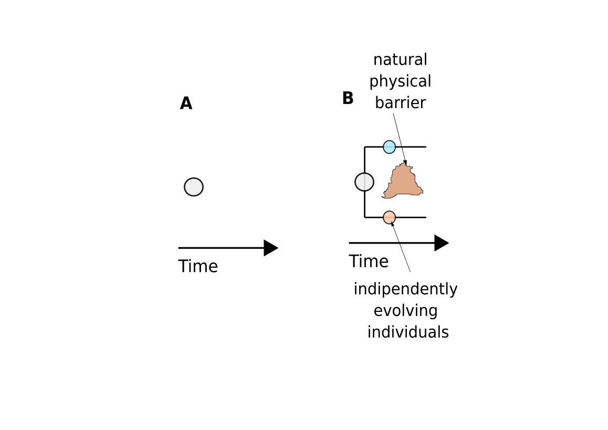
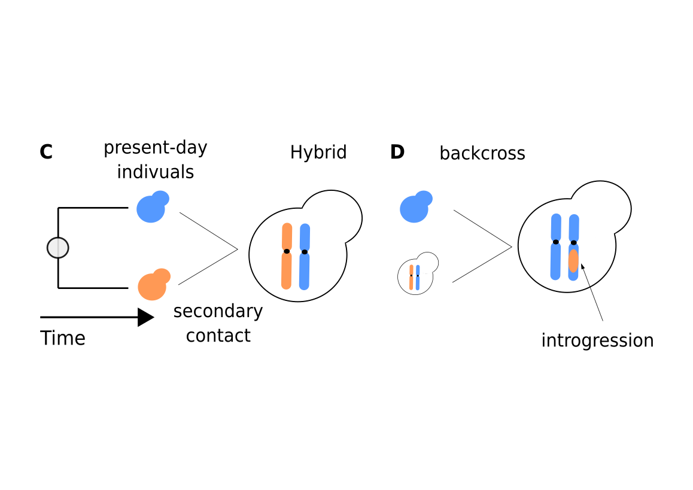

Saccharomyces cerevisiae and its closest species Saccharomyces paradoxus can live in sympatry[d] and evidence of secondary contacts have been described, although high genome divergence (~12%) leads to a strong post-zygotic reproductive barrier (< 1 % offspring viable).

Back in the past, the yeasts Saccharomyces cerevisiae and Saccharomyces paradoxus were part of the same ancestral population (A). The emergence of natural physical barrier (such as rivers or mountains) along with climate changes forced ancestral individuals to evolve in different directions until becoming reproductivelly isolated (B, speciation).

However, not enough time has elapsed to guarantee a completelly reproductive isolation allowing present-day populations to meet and mate (C, secondary contact) generating hybrid with offspring viability < 1 %. Repetitive backcrosses between the hybrid and one of the two parental species results in gene flow between the two species (D, introgression).The phylogeny of S. cerevisiae consists of domesticated and wild isolates collected worldwide grouped in 26 different clades (1,011 yeast collection). In contrast, S. paradoxus is mainly associated with natural niches and rarely associated with human-related environments. S. paradoxus phylogeny closely follows geographic boundaries with five main populations: European, Far East, North and South America and Hawaiian. Recent studies provided large genomic datasets of shorts Illumina reads and population-level high-quality reference genomes allowing us to investigate evolutionary events in S. cerevisiae species such as introgression. An alternative source of shared polymorphisms can be ascribed to incomplete lineage sorting (ILS), although this has never been reported in S. cerevisiae, consistently with the split between the two species being ancient (3-5 mya). We re-analyzed whole genome sequencing data for 1,673 publicly available S. cerevisiae isolates. Firstly, we developed an high-resolution markers-based approach for detecting genomic regions subjected to introgression or ILS. Secondly, we expand this approach to trace back the ancestry of the introgressed S. paradoxus populations. Analysis of the whole collection provided an accurate overview of the introgression landscape within the S. cerevisiae species recapitulating previously reported events characteristics of specific lineages, consistent with such events being recent and occurring at the population level. Among such events, we detected shared introgression blocks across unrelated clades from distinct S. paradoxus populations (American and European) suggesting independent origin and maintenance, which support the adaptive value of this events. Furthermore, we discovered a shared European S. paradoxus introgression in several domesticated clades, which span the coldest meiotic region of the genome. This event appears to support a single ancient introgression that occurred before the split of these lineages. Finally, in addition to the large blocks of contiguous introgressed markers, we unexpectedly identified a large number of shared single nucleotide polymorphism. Such events appear to be highly enriched in the wild chines basal lineages. Our results support that these shared polymorphisms might represent a signature of ILS that have survived the very long evolutionary time since the S. cerevisiae - S. paradoxus split. The surprising enrichment in the basal wild lineage might be explained by a lower number of generations occurred compared to the domesticated lineages. In conclusion, the high resolution mapping of private and shared events reveals a complex species history across different evolutionary timescales and provides a rich resource to investigate their adaptive role.